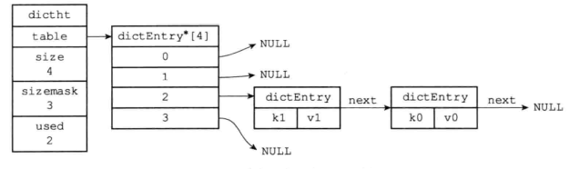
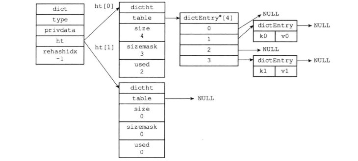
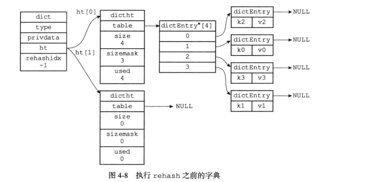
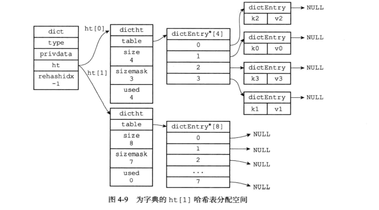
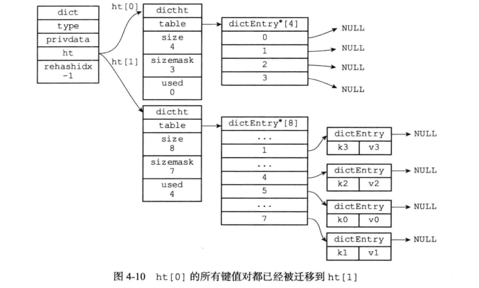
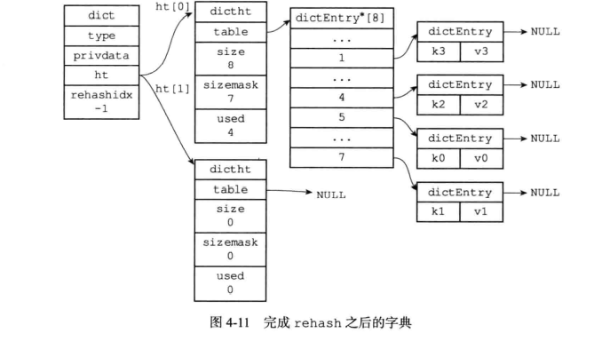

Redis底层数据结构-字典
基于哈希实现的结构-字典
定义
字典，又称为符号表、关联数组或映射，是一种用于保存键值对的数据结构。这种数据结构在如java、c++这类语言库中都有对应的实现，而C语言显然是没有的，基于C语言实现的Redis自己实现了这一结构，比如Redis对数据库的增、删、改、查操作也是构建在对字典的操作之上。
举个例子，当我们执行命令：
redis> SET msg “hello world”
这个命令创建了一个名为msg的键和值为“hello world”的值
字典的实现
哈希表
dict.h/dictht 结构定义：
1 | |
table属性是一个数组，数组中的每一个元素都是指向dict.h/dictEntry结构的指针，每个dictEntry结构保存着一个键值对。
哈希表节点
1 | |
next属性是用来解决hash冲突的场景（这一点和java的HashMap很相似），v属性保存着键值对中的值，这个值可以是一个指针，或者是一个uint64_t整数，又或者是一个int64_t整数。
举个例子，下图通过next指针将两个索引值相同的键连接在一起（使用头插法）

字典
1 | |
type属性是一个指向dictType结构的指针，每个dictType结构保存了一簇用于操作特定类型键值对的函数，Redis会为用途不同的字典设置不同的类型特定函数。
而privdata属性则保存了需要传给那些类型特定函数的可选参数
1
2
3
4
5
6
7
8
9
10
11
12
13
14
15
16
17
18
19typedef struct dictType {
// 计算哈希值的函数
unsigned int (*hashFunction)(const void *key);
// 复制键的函数
void *(*keyDup)(void *privdata,const void *key);
// 复制值得函数
void *(*valDup)(void *privdata,const void *obj);
// 对比键的函数
int (*keyCompare)(void *privdata,const void *key1,const void *key2);
// 销毁键的函数
void (*keyDestructor)(void *privdata,void *key);
// 销毁值得函数
void (*valDestructor)(void *privdata,void *obj);
}dictType;
普通状态下的字典

哈希算法
实现和java中map一样，程序先根据键值对的键计算出哈希值和索引值，然后再去根据索引值，将包含新键值对的哈希表节点放到哈希数组的指定索引上面，如果发生冲突使用头插法查到链表的头部，这样可以使得插入时的时间复杂度是O(1)
hash = dict->type->hashFuncation(k0);
index = hash&ht[0].sizemask;
rehash
扩展和收缩哈希表的工作可以通过执行rehash（重新散列）操作来完成，Redis对字典的哈希表执行rehash的步骤如下：
- 为字典的ht[1]分配空间，这个哈希表的空间大小取决于要执行的的操作，以及ht[0]当前包含的键值对数量（也就是ht[0].used属性的值）
- 如果执行的是扩展操作，那么ht[1]的大小为第一个大于等于ht[0].used*2的2^n;
- 如果执行的是收缩操作，那么ht[1]的大小为第一个大于等于ht[0].used的2n
- 将保存在ht[0]中的所有键值对rehash到ht[1]上面；rehash是指重新计算键的哈希值和索引值，然后将键值对放置到ht[1]的指定位置上。
- 当ht[0]包含的所有键值对都迁到ht[1]上面后将ht[0]内存释放，再将ht[1]设置为ht[0]，并在ht[1]上创建一个新的hash表为下次rehash做准备。




哈希表的扩展与收缩
当下条件任意一个被满足就会自动开始扩容操作
服务器目前没有在执行BGSAVE命令或者BGREWRITEAOF命令，并且哈希表的负载因子大于等于1。
服务器目前正在执行BGAVE命令或者BGREWRITEAOF命令，并且哈希表的负载因子大于等于5
负载因子 = 哈希表已保存节点数量 / 哈希表大小
load_factor = ht[0].used / ht[0].size
当负载因子小于0.1时，程序自动开始对哈希表执行收缩操作。
渐进式rehash
值得一提的是rehash操作并不是一次完成的而是渐进完成因为一次性完成大规模的rehash迁移操作可能会造成服务器在一段时间内停止服务给用户造成极其不好的体验，渐进式rehash用上面的dict字典结构中有一个属性trehashidx用来记录rehash索引扩容到了哪里,访问的时候结合ht[0]和ht[1]进行查找。
总结
- 字典被广泛用于Redis各种功能包括数据库和哈希键
- Redis中的字典使用哈希表作为底层实现，每个字典有两个哈希表，一个在平时用，一个仅在rehash时使用
- 当字典被用作数据库的底层实现，或哈希键的底层实现时，Redis使用MurmurHash2算法来计算哈希值
- 哈希表使用链地址法来解决键冲突，被分配到同一个索引上的多个键值对会连接成一个单向链表。
- 在对哈希表进行扩展或收缩操作时，程序需要将现有哈希表包含的所有键值对rehash到新的哈希表里面，并且这个rehahs过程并不是一次性完成，而是渐进式完成的。
本博客所有文章除特别声明外，均采用 CC BY-SA 4.0 协议 ，转载请注明出处！